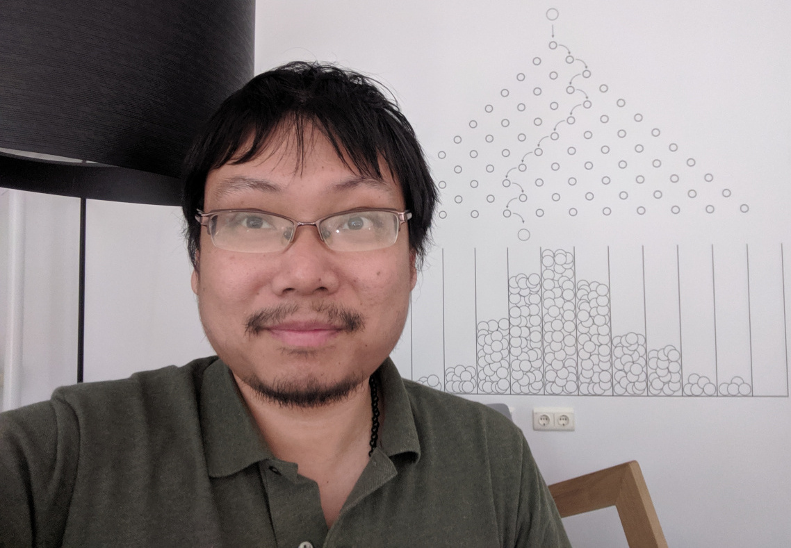
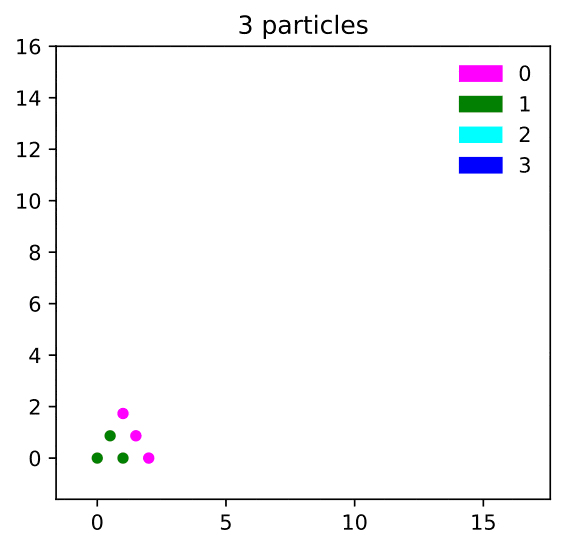
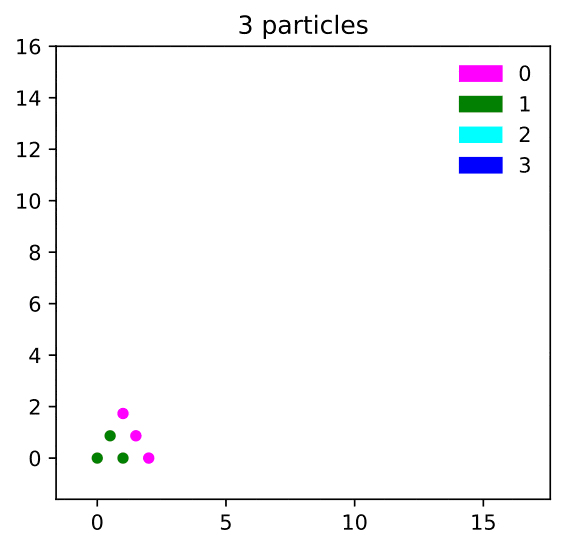

×

May '19, DIAM, TU Delft | '19: W/Sp, Su | '18: Europe, Asia
Brugge | Chicago | Kinderdijk | Lisboa | Montréal | Paris | Santa Monica
|

×
|
May '19, DIAM, TU Delft | '19: W/Sp, Su | '18: Europe, Asia |
|
Brugge | Chicago | Kinderdijk | Lisboa | Montréal | Paris | Santa Monica |
Research themes: Probability, Stochastic Processes, and Analysis of (S)PDEs, with a view to solving problems from Mathematical Physics or Theoretical Computer Science.
Current research focus:
• Interacting particle systems on graphs and lattices. Analysis of microscopic two-particle correlations, potential theory, macroscopic scaling limits, and mixing time cutoffs.
• Analysis of differential privacy in discretizations of Langevin dynamics.
My research is currently being supported by an NSF DMS Probability grant (DMS-1855604).
Upcoming (virtual) travel
Teaching (Fall '20): Calculus III (MATH 163), and First-Year Seminar: Statistics in Real Life (FSEM 144).
 


"The first to use the octopus lemma [of Caputo-Liggett-Richthammer] for something new was Chen." (G. Alon & G. Kozma, arXiv:1811.10537)


Random walks, electric networks, moving particle lemma, and hydrodynamic limits (abstract, talk slides)
See this reminiscence of Tom Liggett, to appear in the Notices of the AMS. Yours truly appears in a mention of the octopus inequality on p11.
Two bibles which I have studied religiously---and struggled with---for the past 5 years. They have helped my research in invaluable ways. If you are stuck interpreting passages in these bibles, I offer my translation service upon request.
{kind=link}
{kind=link}
{kind=link}
{kind=link}
{kind=link}
{kind=link}
{kind=link}
{kind=link}